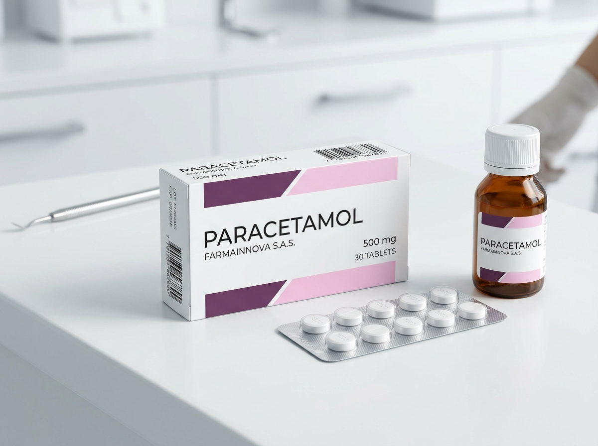

Acetaminofén (Paracetamol)
El acetaminofén (paracetamol) se utiliza para aliviar el dolor leve a moderado y disminuir la fiebre. Puede administrarse solo o combinado con otros medicamentos, como los opioides. No presenta un efecto antiinflamatorio significativo en tejidos periféricos.
Presentaciones: Jarabes, tabletas, tabletas efervescentes, soluciones inyectables y supositorios.
Las presentaciones más utilizadas son las orales (biodisponibilidad del 88%). La vía rectal alcanza concentraciones ~50% de la oral equivalente y con mayor variabilidad.
LADME, Mecanismo de Acción y Precauciones
Absorción
88% Oral
Vía oral: Biodisponibilidad del 88%; Cmax a los 90 minutos.
Vía rectal: Cmax a las 3 horas (~50% de la oral equivalente; absorción variable).
Distribución
Vd ~0,9 L/kg
Vd: ~0,9 L/kg. Amplia distribución en tejidos (excepto tejido graso).
Unión: 10–20% a glóbulos rojos; unión a proteínas plasmáticas baja (10–25% en dosis terapéuticas).
Metabolismo
3 Vías Hepáticas
• Conjugación con glucurónido.
• Conjugación con sulfato.
• Oxidación por CYP2E1 → metabolito tóxico NAPQI (neutralizado por glutatión; en sobredosis causa necrosis hepática; antídoto: N-acetilcisteína).
Eliminación
Orina ≥90% (24 h)
Metabolitos eliminados por orina (<5% sin metabolizar).
Vida media: ~2,5 h (IV 15 mg/kg; 4–8 h en sobredosis).
Aclaramiento: Adultos 0,27 L/h/kg; Niños 0,34 L/h/kg.